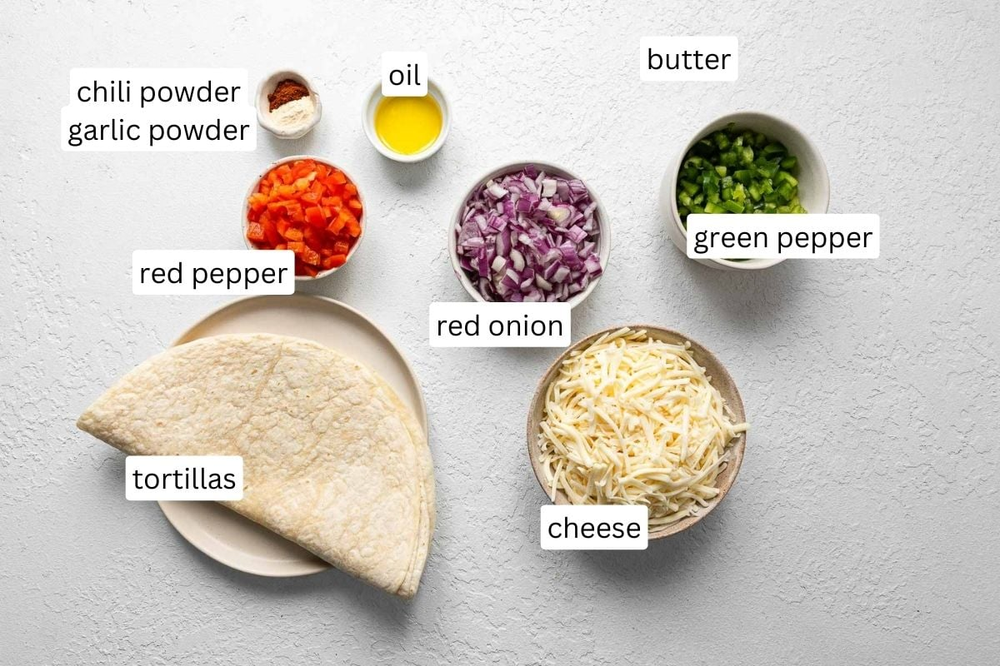

1 cup shredded cheese (cheddar, Monterey Jack, or a blend)
½ cup vegetables
1 tablespoon butter or oil
¼ teaspoon garlic powder (optional)
¼ teaspoon chili powder (optional)
Salsa, sour cream, or guacamole (for serving)

Instructions
1. Preheat the Pan:
Heat a large skillet or pan over medium heat. Add a small amount of butter or oil to coat the surface.
2. Assemble the Quesadilla:
Place one tortilla on the pan. Sprinkle cheese evenly over the tortilla, leaving a small border around the edges. If using meat or vegetables, add them on top of the cheese. Optionally, sprinkle garlic powder or chili powder for extra flavor.
3. Cook the Quesadilla:
Place the second tortilla on top. Cook for 2-3 minutes until the bottom is golden brown and crispy. Carefully flip and cook the other side for another 2-3 minutes.
4. Serve:
Remove from the pan and let it cool slightly. Slice into wedges and serve with salsa, sour cream, or guacamole.